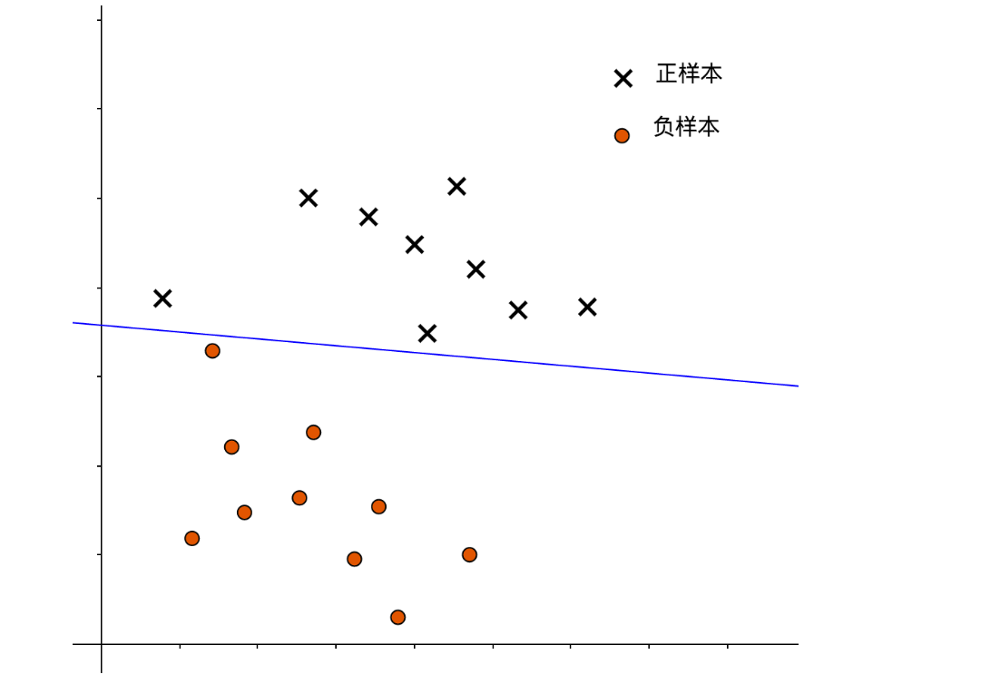

决策边界
上一篇介绍了SVM的超平面划分。
$w^Tx + b = 0 \tag{1}$
其中， $w$ 表示权值向量，权值向量对应了决策边界的法向量。$b$ 则表示偏置，也称位移项，表示了决策边界距坐标原点的距离。我们可以将决策边界记为 $(w,b)$，那么，样本$x$ 到决策边界的距离为：
$r = \frac{|w^Tx + b|}{||w||} \tag{2}$
我们将正样本标识为 1，负样本标识为 -1， 则 SVM 的期望预测可以重新描述为：
即：
$y^{(i)} (w^Tx^{(i)} + b) \geq 1 \tag {4}$
使等号成立的样本称之为“支持向量（Support Vectors）”，两个异类的支持向量到决策边界的距离之和为：
$\gamma = \frac{2}{||w||} \tag{5}$
SVM 就是力图是 $γ$ 足够大，从而获得更好的泛化能力：
可以转化为如下的二次优化问题：
硬间隔与软间隔
红色的决策边界表示了一种较硬的间隔划分，这种划分，能将所有正、负样本区分开来：

硬间隔并不一定好，就像我们在回归问题中提到的那样，这只是对于训练样本作出了极佳的拟合，但容易造成过拟合。比如我们现在有了一个新的负样本，他被错误地分类为了正样本：
而下图则展示了一种较软的间隔，这样的决策边界允许了一部分分类异常，避免了过拟合问题，但如果过软，也容易造成欠拟合问题：
鉴于此，我们在优化过程中，添加一个参数 $ C$ 来控制间隔的“软硬”：
其中，$\ell(z)$是损失函数，其衡量了样本 $x$ 与真实值 $y^{(i)}$的近似程度，当 $C$取值越大时，为了最优化问题，需要 $\ell(z)$越小，即各个样本都要尽可能分类正确，这提高了训练准确率，但也面临过拟合的问题。
| C 取值 | 优势 | 可能面临问题 |
|---|---|---|
| 大 | 提高训练精度 | 过拟合 |
| 小 | 解决过拟合问题 | 欠拟合 |
$C$扮演了回归问题中正则化参数 $\frac{1}{\lambda}$的角色。当 $C$的取值趋于 $\infty$ 时，模型就变为了硬间隔支持向量机。
常见的损失函数有:
| 名称 | 函数式 |
|---|---|
| 0/1 损失 | |
| hinge 损失 | $\ell(z) = max(0, 1-z)$ |
| 指数损失 | $\ell(z) = exp(-z)$ |
| 对数损失 | $\ell(z) = log(1+exp(-z))$ |
若采用 hinge 损失函数，则式 (8) 可以具体为：
$\min_{w,b} \frac{1}{2}||w||^2 + C\sum_{i=1}^m max(0, 1- y^{(i)}(w^Tx^{(i)} + b)) \tag{9}$
引入 “松弛变量（slack variables）” $\xi^{(i)} \geq 0$，可以将式 (9) 改写为：
这就构成 “软间隔支持向量机”。
松弛变量，顾名思义，就是控制每个样本受到约束的程度。$\xi^{(i)}$越大，则受约束程度越小（越松弛）。
- 当$\xi^{(i)} > 1$, 则 $max (0, 1- y^{(i)}(w^Tx^{(i)} + b)) > 1$,则$y^{(i)}$ 与 $(w^Tx^{(i)} + b))$异号，分类错误。
- 当$\xi^{(i)}=0$, 则 $max (0, 1- y^{(i)}(w^Tx^{(i)} + b)) =0$,则$1- y^{(i)}(w^Tx^{(i)} + b) = 0$,样本落在了最大间隔边界上。
- 当$0 \lt \xi^{(i)} \leq 1$, 则 $max (0, 1- y^{(i)}(w^Tx^{(i)} + b)) \leq 1$,则$0 \leq 1- y^{(i)}(w^Tx^{(i)} + b) \leq 1$异号，样本落在了最大间隔与决策边界之间。
对偶问题
对于式 (10) 的优化模型，应用拉格朗日乘子法获得的拉格朗日函数如下：
其中， $\alpha^{(i)} \geq 0$， $\mu^{(i)} \geq 0$是拉格朗日乘子。
令 $ L(w,b,α,ξ,μ)$ 对 $ w$，$b$，$\xi^{(i)}$的偏导为 0 可得：
将其带入 (1) 式中，得：
将式 (12) - (14) 代入式 (11) 中，就得到了式 (10) 的 对偶问题：
对于软间隔支持向量机，KKT 条件要求：
综上，我们不但可以将 KKT 条件写为：
并且，还能够知道，采用了 hinge 损失函数的最终模型 $f(x)$仅与支持向量有关。
核函数
假定我们面临的数据呈现下面这样的分布：
显然，这不是一个线性可分的问题，在逻辑回归中，我们会通过多项式扩展来创建新的高维特征，从而将低维度的线性不可分问题转换为了高维度的线性可分问题。
在 SVM 中，仍然是考虑将低维不可分问题转换到高维度可分问题:
$f(x) = w^T\phi(x)+b \tag{22}$
$\phi(x)$ 对应了 $x$的高维度特征向量。
此时，SVM 优化模型的对偶问题为：
令$\kappa(x^{(i)}, x^{(j)})$表示 $x^{(i)}$与 $x^{(j)}$的内积：
$\kappa(x^{(i)}, x^{(j)}) = \langle \phi(x^{(i)}, \phi(x^{(j)})) \rangle = \phi(x^{(i)})^T \phi(x^{(j)}) \tag{24}$
函数 $κ$ 即表示了核函数（kernel function），引入核函数后，优化模型可以写为：
求解后，得到模型：